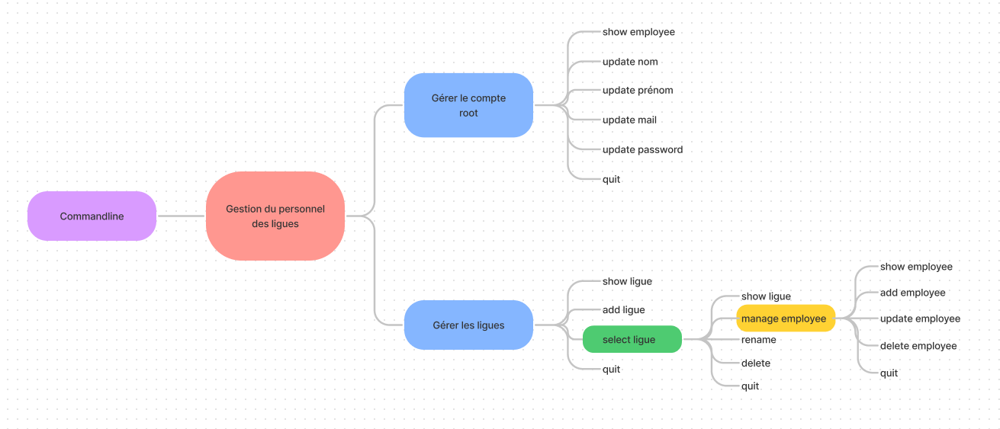
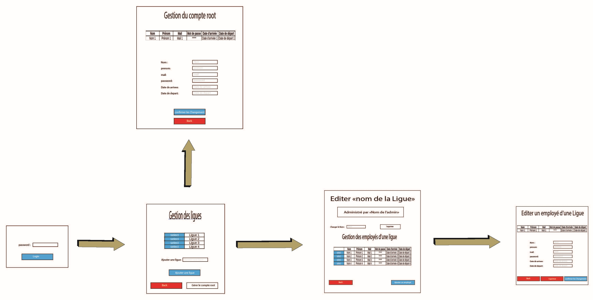

Présentation
Un des responsables de la M2L, utilise une application pour gérer les employés des ligues. L’application est mise à votre disposition par le biais des ressources suivantes :
Cette application, très simple, n’existe qu’en ligne de commande et est mono-utilisateur. Nous souhaiterions désigner un administrateur par ligue et lui confier la tâche de recenser les employés de sa ligue. Une partie du travail est déjà faite mais vous allez devoir le compléter.
Les niveaux d’habilitation des utilisateurs sont les suivants :
- Un simple employé de ligue peut ouvrir l’application et s’en servir comme un annuaire, mais il ne dispose d’aucun droit d’écriture.
- Un employé par ligue est admininstrateur et dispose de droits d’écriture peut gérer la liste des emloyés de sa propre ligue avec une application bureau.
- Le super-admininstrateur a accès en écriture à tous les employés des ligues. Il peut aussi gérer les comptes des administrateurs des ligues avec une application accessible en ligne de commande.
- L’application doit être rendue multi-utilisateurs grace à l’utilisation d’une base de données.
- Les trois niveaux d’habilitation ci-dessus doivent être mis en place.
Itération 1
- Modélisation d’une base de données avec un MCD.

- Vérification du fonctionnement correct de l’application grâce à des tests unitaires.
- Gestion de la date de départ et de celle d’arrivée de chaque employé (couche métier + tests unitaires).
- Représentation des menus du dialogue en ligne de commande avec un arbre heuristique (Utilisez un logiciel de type Freemind).
- 
Itération 2
- Création de la base de données.
- Gestion des dates dans le dialogue en ligne de commande.
- Dans le dialogue en ligne de commande, un employé doit être selectionné avant que l’on puisse choisir de modifier ou de supprimer.
- Possibilité de changer l’administrateur d’une ligue en ligne de commande.
Itération 3
- Création d’une classe fille de Passerelle permettant de gérer la connexion à la base de données avec JDBC (ou avec Hibernate si vous le souhaitez).
- Modélisation de l’interface graphique avec des maquettes.
- 
- Possibilité de changer l’administrateur d’une ligue en ligne de commande.
Itération 4
- Création d’une interface graphique (Swing ou JavaFx) pour que les administrateurs puissent gérer les ligues.
- Si une ligue n’a pas d’administrateur, c’est automatiquement le root qui devient l’administrateur de la ligue (avec les tests unitaires correspondants).
- Installation de la base de données sur un serveur accessible dans le réseau local de la société.
- Rédaction d’un mode opératoire à l’usage des administrateurs.
Synthèse des réalisations professionnelles
Gérer le patrimoine informatique
- Mettre en place et vérifier les niveaux d’habilitation associés à un service
la supervisation des rôles entre employé/admininstrateur/super-admininstrateur.
- Gérer des sauvegardes
Utilisation de GitHub afin de garder une backup du projet. | Usage d'une base de données afin de sauvegarder les données saisies.
Travailler en mode projet
- Analyser les objectifs et les modalités d’organisation d’un projet
Attribution de rôle et taches au sein du groupe afin d'optimiser le développement du projet.
- Planifier les activités
Utilisation de Trello et Asana, des sites de gestion de projets, afin de gérer le planning d'activité de l'AP.
- Évaluer les indicateurs de suivi d’un projet et analyser les écarts
Projet découpé en itération afin de constater l'évolution et d'avoir une deadline constamment proche ainsi qu'un suivi de notre professeur.
Mettre à disposition des utilisateurs un service informatique
- Réaliser les tests d’intégration et d’acceptation d’un service
Tests unitaires effectués afin de vérifier l'efficacité de chacune des fonctionnalités de l'application.
- Déployer un service
Déploiement de l'application depuis un serveur fourni par l'école
- Accompagner les utilisateurs dans la mise en place d’un service
Mise en place d'une documentation utilisateurs et développeurs.